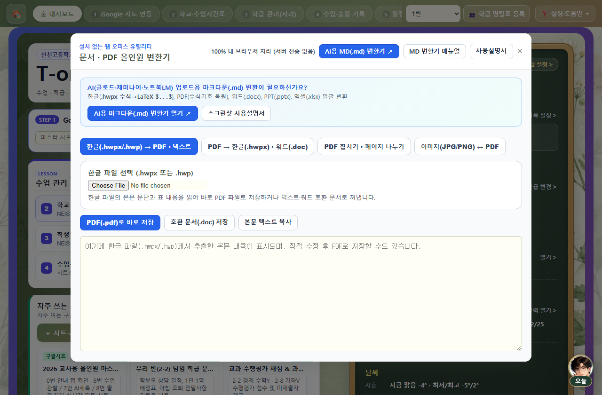
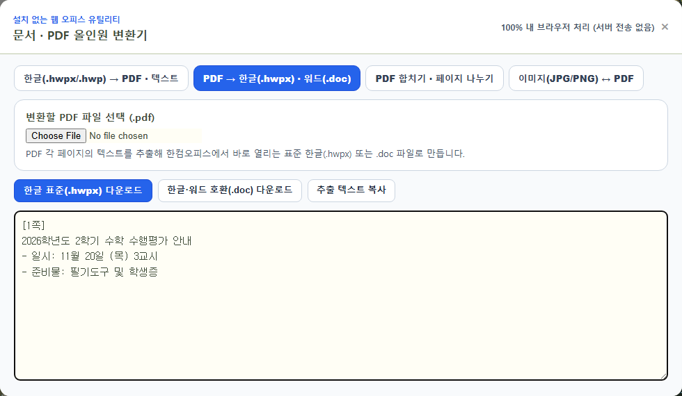
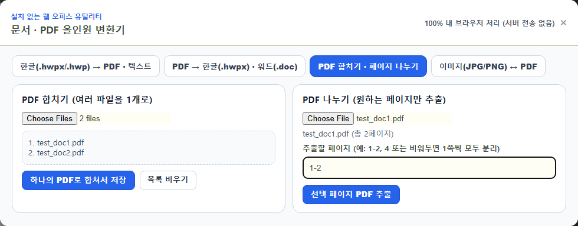
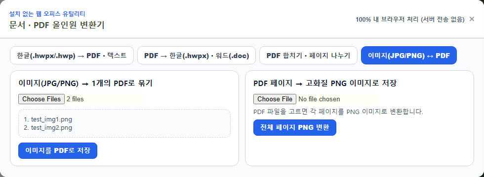

기능 1
한글(.hwpx / .hwp) → PDF · 호환 문서(.doc) · 텍스트

.hwpx(표준 한글) 또는.hwp파일을 선택하면 본문 내용이 아래 편집창에 자동으로 추출됩니다.- 필요 시 내용을 수정한 뒤
PDF(.pdf)로 바로 저장을 누르면 한글 폰트가 깨지지 않는 A4 PDF로 다운로드됩니다.
기능 2
PDF → 한글(.hwpx) · 워드(.doc) · 텍스트 추출

- PDF 파일을 선택하면 페이지별 본문 텍스트를 자동 추출합니다.
한글 표준(.hwpx) 다운로드또는한글·워드 호환(.doc) 저장을 눌러 한컴오피스에서 바로 편집 가능한 파일로 저장합니다.
기능 3
PDF 합치기 · 페이지 나누기

- PDF 합치기: 여러 PDF 파일을 2개 이상 고른 뒤
하나의 PDF로 합치기를 눌러 단일 파일로 병합합니다. - PDF 나누기: 원하는 페이지 범위(예:
1-3, 5)만 뽑아내거나, 빈칸으로 두어 전체 페이지를 개별 PDF ZIP으로 분할합니다.
기능 4
이미지(JPG/PNG) ↔ PDF 상호 변환

- 이미지 → PDF: 여러 장의 사진·스캔 이미지를 선택해 순서대로 1개의 PDF 파일로 묶어 저장합니다.
- PDF → 고화질 PNG: PDF의 각 페이지를 고화질 PNG 이미지로 변환해 미리보기와 함께 ZIP 파일로 내려받습니다.